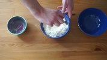

Commons:Village pump
| Community portal introduction | Help desk | Village pump copyright • proposals • technical | Administrators' noticeboard vandalism • user problems • blocks and protections |
|
Welcome to the Village pump
This page is used for discussions of the operations, technical issues, and policies of Wikimedia Commons. Recent sections with no replies for 7 days and sections tagged with {{section resolved|1=--~~~~}} may be archived; for old discussions, see the archives. Please note:
Purposes which do not meet the scope of this page:
Search archives: |
Stone village pump in Rinnen village (pop. 380), Germany [add] | |||||||||||||||
| |||||||||||||||
| SpBot archives all sections tagged with {{Section resolved|1=~~~~}} after 1 day and sections whose most recent comment is older than 7 days. |
May 16[edit]
RFC: Acceptance of the Brazilian Flickr photostream mturdestinos (163189519@N03)[edit]
For the sake of settling this problem once and for all, I request comments from the community to decide
Are photos from https://www.flickr.com/people/163189519@N03 accepted or rejected on Commons?
Fact: https://www.flickr.com/people/163189519@N03 is operated by the Brazilian Ministério do Turismo (Ministry of Tourism).
I believe they are acceptable on Commons for the following reasons:
- Todas as fotos com a tag MTurDestinos são de domínio público e tem permissão de uso livre e por tempo indeterminado para uso total e irrestrito e gratuito em praça nacional e internacional, exceto as imagens com a tag “fotos humanizadas 2018” que possuem pessoas onde o direito de uso é pelo período de 05 (cinco) anos a contar do dia 03 de Abril de 2018.
- Ministério do Turismo released a statement, which confirmed the authenticity of this Flickr account and its licences.
If the decision is accept, then this section will be a useful reference whenever someone DR such files.
If the decision is reject, then please list 163189519@N03 at COM:QFI so no future import is possible.--Roy17 (talk) 11:20, 16 May 2020 (UTC)
- I would like to invite @Érico, Marcos Elias de Oliveira Júnior: because they had dealt with photos from this account.--Roy17 (talk) 11:20, 16 May 2020 (UTC)
- My English is not the best, so I am using the translator. As mentioned, MTur images are in the public domain and can be used freely without any restrictions. Based on that, I uploaded these images to Commons. Soon after, I received a warning from user @Ronhjones: on my discussion page that the images could be deleted, thus questioning the veracity of the license. As @Érico: is a Commons administrator and I have a certain affinity with him on Wikipedia in Portuguese, I decided to ask him about this question and suggested using {{Attribution}}. The suggestion was accepted, so I asked him to restore the images to include the respective tag. Marquinhos talk 14:15, 16 May 2020 (UTC)
- Clearly we'd have to stay away from the “fotos humanizadas 2018” since those have rights that expire (I've never heard of such a thing, bizarre: if you use it in a book is the book supposed to vanish in 2023?). I think probably we should make up a special template for the uploads from this account, much as we do for particular open-ended OTRS tags. - Jmabel ! talk 17:37, 16 May 2020 (UTC)
- My English is not the best, so I am using the translator. As mentioned, MTur images are in the public domain and can be used freely without any restrictions. Based on that, I uploaded these images to Commons. Soon after, I received a warning from user @Ronhjones: on my discussion page that the images could be deleted, thus questioning the veracity of the license. As @Érico: is a Commons administrator and I have a certain affinity with him on Wikipedia in Portuguese, I decided to ask him about this question and suggested using {{Attribution}}. The suggestion was accepted, so I asked him to restore the images to include the respective tag. Marquinhos talk 14:15, 16 May 2020 (UTC)
I agree with Jmabel. The statement of Brazilian Ministry of Tourism clearly allows the use of these files under our licence. Érico (talk) 13:09, 19 May 2020 (UTC)
It seems that the Brazilian Ministry of Tourism legitimately wants to share these images freely. The only thing they have done wrong is they have mistakenly tagged their images with the CC Public Domain mark rather than a CC license. Since it looks like they are at least requesting attribution ("Crédito obrigatório"), using the {{Attribution}} tag seems appropriate. They definitely shouldn't be deleted. Kaldari (talk) 00:07, 21 May 2020 (UTC)
May 23[edit]
United Kingdom General Register Office certificates[edit]
Are GRO certificates of birth, marriage, and death okay to be uploaded to Commons (from a copyright perspective)? An example of a GRO birth certificate is at right: it was issued in 2007, but the actual content of it dates from 1868. I'm assuming it's covered by crown copyright, and the UK government advice used to be that "copyright in the layout of certificates is owned by the Crown. The Crown does not assert any rights of ownership in the contents of the forms." and that users "are authorised to reproduce the layout of the form in any format including on the web, in films and in print." But I haven't been able to find the same information in a non-archived web page. Can anyone help me? — Sam Wilson ( Talk • Contribs ) … 07:30, 23 May 2020 (UTC)
- Crown copyright does not apply to works that were published before 1970. So, if the design of this form hasn't changed since 1969 or earlier, then these certificates would be ok. Otherwise I'm afraid they're still copyrighted and non-free. There is a chance though that the meta:Open Government Licence would apply, but I'm not certain about this. De728631 (talk) 16:33, 23 May 2020 (UTC)
- @De728631: Hmm, interesting, thanks! I'll see if I can dig up some examples from pre-1970 then. — Sam Wilson ( Talk • Contribs ) … 05:07, 24 May 2020 (UTC)
- @Samwilson: That would be great. On another note, would you mind uploading File:Birth Certificate - George Edward Meek 1868.jpg with a higher resolution? In its current state it is almost not readable and so the file is hardly useful for our purposes. De728631 (talk) 13:49, 24 May 2020 (UTC)
- @De728631: no can do, I'm afraid: I didn't upload it. I was just using it as an example (found in Category:Birth certificates of the United Kingdom) because I have a dozen of these certificates that I'd like to upload (mine are all high-res). I'll do some more research first. — Sam Wilson ( Talk • Contribs ) … 00:12, 25 May 2020 (UTC)
- @Samwilson: That would be great. On another note, would you mind uploading File:Birth Certificate - George Edward Meek 1868.jpg with a higher resolution? In its current state it is almost not readable and so the file is hardly useful for our purposes. De728631 (talk) 13:49, 24 May 2020 (UTC)
- @De728631: Hmm, interesting, thanks! I'll see if I can dig up some examples from pre-1970 then. — Sam Wilson ( Talk • Contribs ) … 05:07, 24 May 2020 (UTC)
- the design should be either pd or not original enough for copyright. birth certs from Hong Kong from early 20th century look the same.--Roy17 (talk) 23:16, 1 June 2020 (UTC)
- @De728631:Are you sure that the current formatting of this document is not within copyright, with it's government seals and symbols, one of each on the certificate? In priciple are we allowed to upload government collection records of personal data?
- There is a larger question here. What is Commons supposed to be? How big is it supposed to get. Are we going to upload every birth certificate in the planet?
- We are already competing with pinterest in the art field by uploading artwork with no educational content. Facebook with stuff like this, are we now going to upload every photo taken of every person, going onto every ghost train, at every carnival in the world?
- When are we going to pilfer the entire contents of PD global newspaper archives of the world. Do we have no limits?
- I have no objection to competing with Getty, Alamy etc. for images with educational content, bu we are also now trespassing into other domains in a big way.
- In short why are we not concentrating on educational material, but instead expanding into other areas in this particular case governmental collection records of personal data. Which I would have thought is outside of our remit. Broichmore (talk) 12:26, 8 June 2020 (UTC)
- I wasn’t sure whether to say this, but maybe this is the time to say it: old images, or images of old things, seem to be more valuable. Here is an example: Commons:Deletion requests/File:Photography by Victor Albert Grigas (1919-2017) Ankara Turkey 3-70 March 1970 family 00127 (46560109255).jpg. I’m sure if the image was taken recently, the DR would contain little more than “Deleted: OoS.” But because it was taken a few decades ago, you know, it’s somehow different? Brianjd (talk) 14:31, 8 June 2020 (UTC)
- @Broichmore: Regarding government records containing personal information, here is a precedent: Commons:Deletion requests/File:Monitorul Oficial al României. Partea I 2004-11-12, nr. 1050.pdf. Brianjd (talk) 14:37, 8 June 2020 (UTC)
- @Brianjd: Good point. The collection of Victor Albert Grigas teeters between the sublime and the ridiculous. Some of it is exceptionally good and rare, and a lot of it rubbish. Clearly it was uploaded by by someone who used no discretion or common sense in the process. Is this guy a Turkish Picasso or my Uncle Bill? Goodbye, common sense. This sort of thing has a veritable army of defenders here.
- Nevertheless on the subject of the certificate. That would be handled on Wikipedia with a linked reference, which is appropriate. The only certificate I think worthy of uploading is Obama's.
- The thing is we are supposed to be uploading stuff with educational content, that's an elastic definition for sure. If we are not going to police ourselves with common sense then by definition were going to host every image ever made including the stuff that came off the cutting room floor of Victor Albert Grigas.
- Back to the graduation class, All of these near identical people, none of them named. I might as well go out and take a photo of everyone on the high street. Broichmore (talk) 16:13, 8 June 2020 (UTC)
- In short why are we not concentrating on educational material, but instead expanding into other areas in this particular case governmental collection records of personal data. Which I would have thought is outside of our remit. Broichmore (talk) 12:26, 8 June 2020 (UTC)
- I really didn't mean to start a discussion about the scope of Commons here! :-) This is purely a copyright question. Firstly, there's no doubt that the old parts of them (dating from 1868 in the above example) are public domain; the question is in a) the other text and graphics; and b) the arrangement and layout of the certificates. TNA used to say that the layout was Crown copyright and that "you are authorised to reproduce the layout of the form in any format including on the web". But that guidance document seems to have been removed from their website. My feeling is that that's due to a site reorganisation rather than a policy change, because I can't find anything gainsaying that advice either. One good way forward here might be to just crop out the old text portion of the certificate, and present it here in a way that makes it clear what the column names are etc.On the other matter of whether Commons should host this sort of thing at all: personally I really think it should! I don't mean "every birth certificate ever", but certainly every one that a Wikimedian can upload and that can be used as a reference on Wikipedia or Wikidata. If they're well-scanned and have good metadata, then they should be here.Old things do get given more value here, both because we're allowed to upload them (copyright-wise) and they're rare. Certainly, if we were to upload every photo ever taken in the 1920s we'd end up with a large indiscriminate collection ‚Äî but we're never going to be able to do that, because they are not all extant. So if we only upload every photo taken in the 1920s that we can get our hands on, we're looking at a much smaller pile, and I don't think it's too many (especially if they are from collections, where some will be good and some will not be, but having the whole collection is important). The unique thing about Commons is that different people can bring different metadata to files here, some that the original uploader never would have considered; I don't know where else that happens.Anyway, I didn't mean to write so much. I'll keep trying to figure out the GRO certificate copyright thing.— Sam Wilson ( Talk • Contribs ) … 03:19, 9 June 2020 (UTC)
May 25[edit]
[edit]
There are two kinds of cats that will lead to loops—filmography of XYZ and actors of movie ABC. Example: cat:Ewan McGregor → Ewan McGregor filmography → Beauty and the Beast (2017 film) → Beauty and the Beast (Disney) actors → Ewan McGregor.
How should this be avoided? Which one of these two kinds of cats should be banned, or both, maybe?--Roy17 (talk) 16:55, 25 May 2020 (UTC)
- After some pondering, I think it makes more sense to have filmography of XYZ rather than actors/cast/crew of movie. Each film/TV series/play is a work of the artist. Person -> Person's artistic creation. This flow seems to obey the hierarchic principle better.--Roy17 (talk) 17:11, 25 May 2020 (UTC)
- Loops are a problem when categories have a diffusing relationship, meaning that if category A is in category B, then all files from category A also could be considered part of category B. Here Ewan McGregor → Ewan McGregor filmography and Beauty and the Beast (2017 film) → Beauty and the Beast (Disney) actors are non-diffusing relationships, while Ewan McGregor filmography → Beauty and the Beast (2017 film) and Beauty and the Beast (Disney) actors → Ewan McGregor are diffusing relationships. Unfortunately, it seems like Commons does not have a good way of distinguishing between them. I've started a thread a few days ago on this topic: Commons:Village pump/Technical#Mark subcategorization as non-diffusing. -- King of ♥ ♦ ♣ ♠ 14:14, 26 May 2020 (UTC)
- loops are forbidden. the cat tree is to put things in a hierarchic or causal order, not to link/tag things to any related topics.--Roy17 (talk) 23:16, 1 June 2020 (UTC)
- @Roy17, Tuvalkin, King of Hearts: Well, this is interesting. I turns out that the relevant policy actually supports what Roy17 said:
- There should be no cycles (i.e. a category should not contain itself, directly or indirectly).
- I’d like to think that Tuválkin, King of Hearts and I are all reasonably experienced users (one of us is even an admin), yet we all failed to pick up on this. Does anyone know the origin of this policy and if there are recent discussions to support it? Brianjd (talk) 07:07, 2 June 2020 (UTC)
- I took a closer look at the category loop in the initial post (which I did not do before), and decided that every relationship in that loop is a useful one that I would like to keep. I don’t know what I would do if someone tried to force me to eliminate loops. While I was there, I found a couple of other issues (perhaps off-topic here, I don’t know):
- Beauty and the Beast (2017 film) contains Beauty and the Beast (Disney) actors; these should be consistent.
- Emma Thompson is in Beauty and the Beast (Disney) actors but also in Beauty and the Beast (2017 film) (I have removed the latter category). Brianjd (talk) 07:18, 2 June 2020 (UTC)
- Brianjd There are exceptions to every rule. Why did you delete Emma from the 2017 film only. She was in that particular movie. The studio system is dead, she is not under contract by Disney in a larger way. There will be other trees that the 2017 film features in. I would say that Beauty and the Beast (Disney) actors is limiting if not superflous or in fact separate.Broichmore (talk) 15:02, 4 June 2020 (UTC)
- @Broichmore: I did point out that one category says “Disney”, one category says “2017 film”, and that both categories should use the same term. I thought they were both ways of saying “the Disney film, as opposed to the fairy tale”. But since then, I found out that there was a series of films.
- Why didn’t I realise this to start with? We have Beauty and the Beast (Disney) actors inside Beauty and the Beast (2017 film). Basically, we have a more general category inside a more specific one. That’s what led to my confusion. We shouldn’t nest categories this way. Brianjd (talk) 06:19, 8 June 2020 (UTC)
- Brianjd There are exceptions to every rule. Why did you delete Emma from the 2017 film only. She was in that particular movie. The studio system is dead, she is not under contract by Disney in a larger way. There will be other trees that the 2017 film features in. I would say that Beauty and the Beast (Disney) actors is limiting if not superflous or in fact separate.Broichmore (talk) 15:02, 4 June 2020 (UTC)
- The only loops that should be avoided are those of first order (parent cat is also child cat and vice versa), as the implied nexus is bijective; all other loops are theoretically possible. Yes, the relevant policy is wrong and should be changed. It stems from a over-strict view of categories as a means to indicate hierarchical nexi only (inspired by its use in Wikipedia, where it makes sense), but that notion was abandoned (or: expanded) long ago, if it was ever observed strictly. -- Tuválkin ✉ ✇ 01:25, 8 June 2020 (UTC)
- I took a closer look at the category loop in the initial post (which I did not do before), and decided that every relationship in that loop is a useful one that I would like to keep. I don’t know what I would do if someone tried to force me to eliminate loops. While I was there, I found a couple of other issues (perhaps off-topic here, I don’t know):
- @Roy17, Tuvalkin, King of Hearts: Well, this is interesting. I turns out that the relevant policy actually supports what Roy17 said:
May 29[edit]
File:Grossgliederung Europas-fr.svg[edit]
Help - did I just overwrite this file with my translation from SVGTranslate? Please revert? --Andreas (talk) 23:41, 29 May 2020 (UTC)
- @Andreas: I think it's fine. It shows an upload having occurred, but the images appear identical, including French captions. - Jmabel ! talk 23:51, 29 May 2020 (UTC)
- hmm... interesting. Do you (or anyone) have any idea where my translated captions ended up? --Andreas (talk) 00:46, 30 May 2020 (UTC)
- Nothing to see at [1]. --Achim (talk) 09:46, 30 May 2020 (UTC)
- Each of them are identical...interesting!. --Red-back spider (talk) 22:39, 30 May 2020 (UTC)
- Andreas, FYI, Read Commons:Translation_possible/Learn_more, or did you apply the translation extention as indicated, or other external tool? Translated with the suggested extention will save your translation in the section _other languages_ but will not overwrite the original, in this case /fr File. Omotecho (talk) 22:24, 4 June 2020 (UTC)
- Nothing to see at [1]. --Achim (talk) 09:46, 30 May 2020 (UTC)
- hmm... interesting. Do you (or anyone) have any idea where my translated captions ended up? --Andreas (talk) 00:46, 30 May 2020 (UTC)
- The new file does contain new text. For example, where the old one ends with:
| Village pump |
|---|
<text
x="179.91827"
y="506.89032"
style="font-size:medium;font-style:normal;font-variant:normal;font-weight:normal;font-stretch:normal;text-indent:0;text-align:start;text-decoration:none;line-height:125%;letter-spacing:normal;word-spacing:normal;text-transform:none;direction:ltr;block-progression:tb;writing-mode:lr-tb;text-anchor:start;opacity:1;color:#000000;fill:#5f6061;fill-opacity:1;fill-rule:nonzero;stroke:none;stroke-width:1;stroke-linecap:butt;stroke-linejoin:miter;marker:none;marker-start:none;marker-mid:none;marker-end:none;stroke-miterlimit:4;stroke-dasharray:none;stroke-dashoffset:0;stroke-opacity:1;visibility:visible;display:inline;overflow:visible;enable-background:accumulate;font-family:Bitstream Vera Sans"
id="text4182">
<tspan
x="179.91827"
y="506.89032"
id="tspan4186">France</tspan>
</text>
|
the new one has
| Village pump |
|---|
<switch style="font-size:medium;font-style:normal;font-variant:normal;font-weight:normal;font-stretch:normal;text-indent:0;text-align:start;text-decoration:none;line-height:125%;letter-spacing:normal;word-spacing:normal;text-transform:none;direction:ltr;block-progression:tb;writing-mode:lr-tb;text-anchor:start;opacity:1;color:#000000;fill:#5f6061;fill-opacity:1;fill-rule:nonzero;stroke:none;stroke-width:1;stroke-linecap:butt;stroke-linejoin:miter;marker:none;marker-start:none;marker-mid:none;marker-end:none;stroke-miterlimit:4;stroke-dasharray:none;stroke-dashoffset:0;stroke-opacity:1;visibility:visible;display:inline;overflow:visible;enable-background:accumulate;font-family:Bitstream Vera Sans"> <text x="179.91827" y="506.89032" style="font-size:medium;font-style:normal;font-variant:normal;font-weight:normal;font-stretch:normal;text-indent:0;text-align:start;text-decoration:none;line-height:125%;letter-spacing:normal;word-spacing:normal;text-transform:none;direction:ltr;block-progression:tb;writing-mode:lr-tb;text-anchor:start;opacity:1;color:#000000;fill:#5f6061;fill-opacity:1;fill-rule:nonzero;stroke:none;stroke-width:1;stroke-linecap:butt;stroke-linejoin:miter;marker:none;marker-start:none;marker-mid:none;marker-end:none;stroke-miterlimit:4;stroke-dasharray:none;stroke-dashoffset:0;stroke-opacity:1;visibility:visible;display:inline;overflow:visible;enable-background:accumulate;font-family:Bitstream Vera Sans" id="text4182-rm" systemLanguage="rm"> <tspan x="179.91827" y="506.89032" id="tspan4186-rm">Frantscha</tspan> </text> <text x="179.91827" y="506.89032" style="font-size:medium;font-style:normal;font-variant:normal;font-weight:normal;font-stretch:normal;text-indent:0;text-align:start;text-decoration:none;line-height:125%;letter-spacing:normal;word-spacing:normal;text-transform:none;direction:ltr;block-progression:tb;writing-mode:lr-tb;text-anchor:start;opacity:1;color:#000000;fill:#5f6061;fill-opacity:1;fill-rule:nonzero;stroke:none;stroke-width:1;stroke-linecap:butt;stroke-linejoin:miter;marker:none;marker-start:none;marker-mid:none;marker-end:none;stroke-miterlimit:4;stroke-dasharray:none;stroke-dashoffset:0;stroke-opacity:1;visibility:visible;display:inline;overflow:visible;enable-background:accumulate;font-family:Bitstream Vera Sans" id="text4182"> <tspan x="179.91827" y="506.89032" id="tspan4186">France</tspan> </text> </switch> |
So this [switch https://developer.mozilla.org/en-US/docs/Web/SVG/Element/switch will show Frantscha instead of France iif [one of the language tags indicated by user preferences is a case-insensitive match https://developer.mozilla.org/en-US/docs/Web/SVG/Attribute/systemLanguage] of "rm".
The WMF renderer will just be using the default alternative, thus still showing it in English.
Platonides (talk) 02:23, 7 June 2020 (UTC)
May 30[edit]
Merge proposal of Template:PD-MacaoGov and Template:PD-MacaoGov-text[edit]
{{PD-MacaoGov}} marks media files which are released into public domain by the Macau government, in which its scope is defined in {{PD-MacaoGov/detail}}. Meanwhile, {{PD-MacaoGov-text}} marks text files that are in Macau governmental public domain, and almost contain the same scope of PD-MacaoGov.
As both {{PD-MacaoGov/detail}} and {{PD-MacaoGov-text}} stated that only official texts are in public domain, this means that only media files that are included in these official documents benefits from such public domain (such as this map, as an appendix of a legislation). Therefore, I believe {{PD-MacaoGov-text}} is redundant.
I propose to have the following modifications:
- Delete {{PD-MacaoGov-text}}, and change all files licensed under {{PD-MacaoGov-text}} to {{PD-MacaoGov}}.
- Insert {{PD-MacaoGov/detail}} into {{PD-MacaoGov}}. (So that people won't simply tag normal images from the government of Macau and upload to here, we've already get two bunches of "public domain" images deleted at here.)
- After 2, delete {{PD-MacaoGov/detail}}.
廣九直通車 (talk) 03:00, 26 May 2020 (UTC)
- Comment I cannot not estimate this, though it sounds sensible, but in case of merging: Better first convert {{PD-MacaoGov-text}} into a redirect to {{PD-MacaoGov}} (and maybe do not even delete it later; but the several subpages could be deleted). Then check for usage (apparently only 38:
all: hastemplate:"PD-MacaoGov-text"). Then check and edit other pages that link to this template: Special:WhatLinksHere/Template:PD-MacaoGov-text. Similar approach for {{PD-MacaoGov/detail}}; there is no use as template, but Special:WhatLinksHere/Template:PD-MacaoGov/detail shows linking. — Speravir – 02:27, 31 May 2020 (UTC)- Well, as both templates are fully protected, so I can't directly make any edits. That's the reason why I made a proposal here, in order to seek for other comments and get a consensus.廣九直通車 (talk) 08:37, 31 May 2020 (UTC)
- Support We just need one Macao Govt's Public Domain template, as their criterias are too simple to allow multiple templates for me. --Liuxinyu970226 (talk) 03:55, 4 June 2020 (UTC)
Category:Draughtsmen by country[edit]
I see that the category Draughtsmen by country contains many subcategories which should be re-classified in Drawers (artists) by country, which I just created. Following English Wiktionary, a draughtman is "a person skilled at drawing engineering or architectural plans" and the persons classified there seem to be "drawers" = artists who primarily make drawings. --Lucyin (talk) 15:35, 30 May 2020 (UTC)
- @Lucyin: Instead, we could make a redirect from Category:Drawers (artists) by country to Category:Draughtsmen by country. --Red-back spider (talk) 22:34, 30 May 2020 (UTC)
- "Drawers" in this sense barely exists as a word in English. Perhaps you wanted "Illustrators"? Category:Illustrators. - Jmabel ! talk 23:46, 30 May 2020 (UTC)
- Yes, however please note Draughtsmen and Illustrators are two different distinct vocations. Drawers are something you find in furniture. A draughtman delivers ale? Seriously. I agree best to split between Draughtsmen and and Illustrators. As for drafters of technical or Engineering drawings in the modern sense; I very much doubt as individuals, CAD operators or the like that they are notable or even known, they get filed under Draughtsmen of whom they are the modern equivalent. These drawers cats should be deleted. Broichmore (talk) 11:45, 1 June 2020 (UTC)
- In Wikidata we have drafter (Q683754) for people drawing technical drawings, illustrator (Q644687) for book illustrators and drawer (Q15296811) for person doing artistic drawings. In Polish language those terms do not overlap much, but in English: drafter, illustrator, draftsman, draftsperson, draughtsperson, and draughtsman are some of the English aliases of drawer (Q15296811). I think "illustrators" should be kept separate and the terms draftsman/draftsperson/draughtsperson/draughtsman is more associated with technical drawings, So the only thing left is "drawer", which I agree that it "barely exists as a word in English". --Jarekt (talk) 12:54, 1 June 2020 (UTC)
- If that's the case then Wikidata is plain wrong. Drafts by drafters (sic) are rough sketches made as a basis for finished art work, underlying paint. Superior drawers (as you like to put it ) are draughtsmen. Leonardo was a draughtsman, in part; as are Category:Thomas Badeslade and Category:Augustus Hageboeck or virtually most architects. Part of the problem is exemplified by this man (for example en:Jan van der Vaardt) who is not a draughtsman; he's only that in a fit of enthusiasm by a fan who wrote a book, he is not even an illustrator. An illustrator strictly speaking is a commercial artist who illustrates books etc. Artistic drawings is something all artists do, as do they also breathe. We don't categorize them as breathers. The dictionaries are clear it is exceptional line drawing talent capable of selling finished drawings as work that are draughtsmen. If it "barely exists as a word in English" there's a reason for it, it doesn't exist. For the umpteenth time it is not within our remit to invent terms. drawer (Q15296811) should not include illustrators, it should be separate. Again An artist who practices or works in technical drawing may be called a draftsman or a draughtsman. Effectively thats drawings of record employing in the main straight lines and regular shapes in practise. Broichmore (talk) 13:23, 1 June 2020 (UTC)
- Broichmore I agree with most of your statements. Drawing is something most painters and other artists do, and we do not need to add them to specialized categories, unless that is what they are most famous for. And the word drawer as someone who is doing artistic drawing is problematic. According to Merriam-Webster dictionary it is one of the meaning of the word but according to Cambridge dictionary it is not. We still need the agree if we should have Draughtsmen by country or Drawers (artists) by country category and it seems like your vote is for the first one or none. I think we need it, but I am not sure which term is less confusing. --Jarekt (talk) 14:22, 3 June 2020 (UTC)
- Jarekt Your right I would prefer Draughtsmen by country. Rather than drawers, or are you meaning sketchers? Nevertheless all artists draw sketches. Their finished compositions would normally be filed under "artist" in categories such as "Drawings by ..." and or '"Sketches by ..." Drawers as a term is best left without mention IMO, otherwise they are draughtsmen by any definition. Broichmore (talk) 15:33, 3 June 2020 (UTC)
- You have me thinking. Gainsborough, for example, is often described as being an excellent draughtsmen, but you wont find him in such a category because all his drawing work were preparatory studies for painting in the main. Drawing is on of those ancient fuzzy terms like ships, best left sleeping. Like I said all artists draw. Broichmore (talk) 15:43, 3 June 2020 (UTC)
- Broichmore I agree with most of your statements. Drawing is something most painters and other artists do, and we do not need to add them to specialized categories, unless that is what they are most famous for. And the word drawer as someone who is doing artistic drawing is problematic. According to Merriam-Webster dictionary it is one of the meaning of the word but according to Cambridge dictionary it is not. We still need the agree if we should have Draughtsmen by country or Drawers (artists) by country category and it seems like your vote is for the first one or none. I think we need it, but I am not sure which term is less confusing. --Jarekt (talk) 14:22, 3 June 2020 (UTC)
- If that's the case then Wikidata is plain wrong. Drafts by drafters (sic) are rough sketches made as a basis for finished art work, underlying paint. Superior drawers (as you like to put it ) are draughtsmen. Leonardo was a draughtsman, in part; as are Category:Thomas Badeslade and Category:Augustus Hageboeck or virtually most architects. Part of the problem is exemplified by this man (for example en:Jan van der Vaardt) who is not a draughtsman; he's only that in a fit of enthusiasm by a fan who wrote a book, he is not even an illustrator. An illustrator strictly speaking is a commercial artist who illustrates books etc. Artistic drawings is something all artists do, as do they also breathe. We don't categorize them as breathers. The dictionaries are clear it is exceptional line drawing talent capable of selling finished drawings as work that are draughtsmen. If it "barely exists as a word in English" there's a reason for it, it doesn't exist. For the umpteenth time it is not within our remit to invent terms. drawer (Q15296811) should not include illustrators, it should be separate. Again An artist who practices or works in technical drawing may be called a draftsman or a draughtsman. Effectively thats drawings of record employing in the main straight lines and regular shapes in practise. Broichmore (talk) 13:23, 1 June 2020 (UTC)
- In Wikidata we have drafter (Q683754) for people drawing technical drawings, illustrator (Q644687) for book illustrators and drawer (Q15296811) for person doing artistic drawings. In Polish language those terms do not overlap much, but in English: drafter, illustrator, draftsman, draftsperson, draughtsperson, and draughtsman are some of the English aliases of drawer (Q15296811). I think "illustrators" should be kept separate and the terms draftsman/draftsperson/draughtsperson/draughtsman is more associated with technical drawings, So the only thing left is "drawer", which I agree that it "barely exists as a word in English". --Jarekt (talk) 12:54, 1 June 2020 (UTC)
- Yes, however please note Draughtsmen and Illustrators are two different distinct vocations. Drawers are something you find in furniture. A draughtman delivers ale? Seriously. I agree best to split between Draughtsmen and and Illustrators. As for drafters of technical or Engineering drawings in the modern sense; I very much doubt as individuals, CAD operators or the like that they are notable or even known, they get filed under Draughtsmen of whom they are the modern equivalent. These drawers cats should be deleted. Broichmore (talk) 11:45, 1 June 2020 (UTC)
June 01[edit]
Over diffusion of categories[edit]
I've whinged in the past here, about files being lost through being buried from sight by people who don't want images used, but spend their time in filing as a means to its own end. Imagine my dismay when I happened on this Category:December 1941 in Sydney. We have millions of files barely described without this nonsense. Broichmore (talk) 12:33, 1 June 2020 (UTC)
- I don’t understand what the problem is. Including so-called “nonsense” categories doesn’t prevent you from including other, more useful categories as well. How are files being “buried”? Brianjd (talk) 13:22, 1 June 2020 (UTC)
- The problem is taking a file and putting (filing) it out of sight. If the file is effectively lost, then how is it available for including other, more useful categories? I could think of ten more useful categories for that file than December 1941 in Sydney. We are supposed to make images available, that means keep them in open sight, not bury them in shoeboxes in the attic. Broichmore (talk) 13:34, 1 June 2020 (UTC)
- Then add those categories!!! What’s stopping you? If you mean that files where this is the only category should still be tagged with {{Check categories}}, then I agree, but that’s a separate issue. Also, the file in Category:December 1941 in Sydney already has other categories. So, again, what is the problem? Brianjd (talk) 13:56, 1 June 2020 (UTC)
- Say there’s a file in Category:December 1941 in Sydney. It’s not in any other categories and it’s not tagged with {{Check categories}} or anything like that. Now the file is hard to find, and it’s hard for people to add categories to it.
- Now say we delete Category:December 1941 in Sydney. The file is still hard to find. It’s still hard to add categories to it. What exactly do you propose? Brianjd (talk) 13:59, 1 June 2020 (UTC)
- The problem is taking a file and putting (filing) it out of sight. If the file is effectively lost, then how is it available for including other, more useful categories? I could think of ten more useful categories for that file than December 1941 in Sydney. We are supposed to make images available, that means keep them in open sight, not bury them in shoeboxes in the attic. Broichmore (talk) 13:34, 1 June 2020 (UTC)
- Brianjd is right and this needs to be repeated over and over. This is not a problem of “overdiffusion”, it is a problem of undercategorization. Furthermore Broichmore is escalating in their agressive, offensive language and over-the-top caricaturizing of other users — now we went from insults about misundertanding of categorization (right back at you) to accusations of sabotage («people who don't want images used»). -- Tuválkin ✉ ✇ 15:23, 1 June 2020 (UTC)
- That said: there is a real problem of people removing {{Check categories}} and other similar tags and categories after adding one not-very-informative category to an image. - Jmabel ! talk 15:57, 1 June 2020 (UTC)
- Tuvalkin I was wrong of course to employ sarcasm and should have said unwittingly don't want images used, but then of course you knew what I meant. Where are these insults directed at Brianjd or the escalation? You just twisted that. To call it insulting is OTT. Nevertheless, undercategorization? I of course agree its' undercategorization, of course it is. But that's not my point. Creating new categories should be done with caution, I see very little value in Sydney's case of catting below Sydney in the 1940s, the quantity of images doesn't justify it. Far better, all the images sit in decades (if not centuries) in this case. I would suggest that filing by year alone is, in effect, destructive. The files should all be in History of Sydney and maybe copied to the year if that's what you want. Even then if someone wants to find files by year then an SQL query is the better way to go. Maintaining multiple obscure cats once made is a problem, and once made they are seldom maintained. So your suggesting it's okay to file single images in obscure categories, nested in empty ones, as we can see ever increasing examples of in the project, provided that you fully categorize every piece of minutiae in an image? How is that to be policed, when a simpler way is to say if filing by time then there should be a limit of at least 20 images eligible for posting to such a cat. Broichmore 16:44, 1 June 2020 (UTC)
- @Broichmore, Tuvalkin, Jmabel: The previous comment was added in this diff: Special:Diff/423183072. It was signed with a time but not a name; I have added the name. Interesting. Brianjd (talk) 06:42, 2 June 2020 (UTC)
- I don’t understand how bigger categories would be easier to maintain. They might, in fact, be harder to maintain.
- How many people do you know that know SQL (or anything else to do with databases), excluding people who work in a relevant field? (This is the one area where I would say you might have a point, now that we have things like FastCCI. But this alone is not a reason to make major changes to our categorisation system.)
- Categories that contain other categories are not empty.
- Finally, there’s this really cool thing called paragraphs. They make it so much easier for other people to read your messages. Brianjd (talk) 06:54, 2 June 2020 (UTC)
- Tuvalkin I was wrong of course to employ sarcasm and should have said unwittingly don't want images used, but then of course you knew what I meant. Where are these insults directed at Brianjd or the escalation? You just twisted that. To call it insulting is OTT. Nevertheless, undercategorization? I of course agree its' undercategorization, of course it is. But that's not my point. Creating new categories should be done with caution, I see very little value in Sydney's case of catting below Sydney in the 1940s, the quantity of images doesn't justify it. Far better, all the images sit in decades (if not centuries) in this case. I would suggest that filing by year alone is, in effect, destructive. The files should all be in History of Sydney and maybe copied to the year if that's what you want. Even then if someone wants to find files by year then an SQL query is the better way to go. Maintaining multiple obscure cats once made is a problem, and once made they are seldom maintained. So your suggesting it's okay to file single images in obscure categories, nested in empty ones, as we can see ever increasing examples of in the project, provided that you fully categorize every piece of minutiae in an image? How is that to be policed, when a simpler way is to say if filing by time then there should be a limit of at least 20 images eligible for posting to such a cat. Broichmore 16:44, 1 June 2020 (UTC)
- @Jmabel: I’m not familiar with this issue, but if these users are adding exactly one category before removing such tags, it could be because they don’t understand that files can (and usually should) be in multiple categories. Brianjd (talk) 06:56, 2 June 2020 (UTC)
- That said: there is a real problem of people removing {{Check categories}} and other similar tags and categories after adding one not-very-informative category to an image. - Jmabel ! talk 15:57, 1 June 2020 (UTC)
- @Brianjd: My excuse for large numbers of images in a category is that our best search tool is the human eye, but it only works if images are within its range.
- The problem filing by year is, what might have been one click into a decade is now ten plus by year, and potentially 130 if by month. Thats what I mean by hiding them.
- It's actually a simple matter to scan hundreds of images, I do it every day. Broichmore (talk) 15:00, 3 June 2020 (UTC)
- Finally, a decent explanation. This is actually a good point, but we should probably fix this through better software. Brianjd (talk) 15:16, 3 June 2020 (UTC)
- I'd love to have this fixed by better software, but until it is here and in common use, we have to keep the category system working. And this is a real problem. If the by year categories are used in addition to other categories, there is no problem, but when a category is split by year, keeping a file in the split category is seen as overcategorisation. So now you cannot find it were it is easy to find. Splitting by year might sometimes be sensible when the main category is large, but often other criteria are more meaningful, and finding by year is much more work than just clicking for the next 200 files if you aren't interested in a certain year, especially if the by year categories are small. --LPfi (talk) 21:47, 3 June 2020 (UTC)
- In my opinion, subcategorization by date can be used either to fully diffuse a main category or solely as a supplement. If the subject is a single thing (e.g. Category:Eiffel Tower) where most of the photos will look very similar to each other and there just isn't a really good way to subcategorize otherwise, then emptying the main cat into the dated cats makes sense. However, if the subject is very broad (e.g. Category:New York City), then forcing a full diffusion into date categories doesn't make sense. Instead, photos should either be double-categorized into the main category or (even better) fully diffused into non-date subcats. -- King of ♥ ♦ ♣ ♠ 22:00, 3 June 2020 (UTC)
- I'd love to have this fixed by better software, but until it is here and in common use, we have to keep the category system working. And this is a real problem. If the by year categories are used in addition to other categories, there is no problem, but when a category is split by year, keeping a file in the split category is seen as overcategorisation. So now you cannot find it were it is easy to find. Splitting by year might sometimes be sensible when the main category is large, but often other criteria are more meaningful, and finding by year is much more work than just clicking for the next 200 files if you aren't interested in a certain year, especially if the by year categories are small. --LPfi (talk) 21:47, 3 June 2020 (UTC)
- Catting by date can only be supplemental at best.
- I agree with everything King of Hearts said, if we’re going to use dates by then images need to be double-categorized into the main category or (even better) fully diffused into non-date subcats.
- Finally, a decent explanation. This is actually a good point, but we should probably fix this through better software. Brianjd (talk) 15:16, 3 June 2020 (UTC)
- I was accused of over-excitement earlier, and perhaps there should be some explanation for that. I almost exclusively hunt down images of ships and steamboats here. The main purpose is to upload their images if notable into Wikipedia, or make them available as a supplement to Wikipedia. A side product of that is specific categorisation of the image into (examples) HMS Foo, (Sidewheel riverboat Foo), Atlantic convoy, etc for future potential use in Wikipedia.
- Ship images are very often uncatalogued as such, and are instead lying hidden inside images in major cats such as Mississippi River, Views of Foo, Marine art by Foo, Paintings by foo, Engravings of Foo. These images often have to be visually identified, there being no mention in the text of the boat. The scene may be of a river, whatever. The boat’s name if your lucky is printed on the side of the vessel, or it has to be identified by other means. This does not apply just to ships, it could be almost any object you could imagine, bridges, dresses, faces, beggars, bouquets, people playing chess, traffic lights, etc.
- Too find these images requires scanning through tranches of images. Commonly in main cats holding between 1 to say 3,500 images. Entire museum collections. That’s not as hard as it sounds, when using multiple screens, at least one set to vertical orientation and scrolling through 500 images at a time, it can be tedious, but fruitful. Example File:Cincinnati, Ohio.jpg contains Steam packet ‘’Bonanza’’.
- After a while of doing this you get to sense other images on the way that are likely lost. The majority of images I’m searching for or dealing with are historical images, not modern day photography. The explosion of digital photography, the sheer quantity of images, has made the overwhelming majority trivial to say the least. Not to mention the time soaking problems that copyright laws present.
- On a slightly separate note, IMO the category system is at threat, by Wikidata. Infoboxes are taking over the role that was performed by categories. Where there are duplications between wikidata and commons the duplicate commons categories are being systematically deleted; because they are already represented in the infobox. As the Infoboxes expand by adding data to them the categories get deleted. Cats as we know them, could entirely disappear.
- This is a problem; Wikidata is totally reliant on the input of data, and that’s only achieved by manually categorising files, it doesn’t happen the other way round.
- Wikidata structured data fields are for machines (ie Google Image search) etc. However it falls short of the efficiency of the Google engine, and doesn't perform as well as its touted. Perhaps it’s too early as it’s still in development. It’s my belief that Wikidata and old fashioned categorising should be regarded as totally separate things and one cannot supplant the other. Commons categorising being the superior of the two.
- It’s my contention that attempting to properly and fully categorise an image (on a minimal basis) is hard enough already without the added hurdles of taking into account information already there in infoboxes or in hidden categories. I don’t see how such a complicated environment can allow cataloguing to be done without duplication or for it to be a rewarding experience.
- Deleting {{Check categories}} too early is a problem, perhaops covered by an "are you sure, warning"? As is mis-catting, many historical 16th , 17th, 18th century images of place are being taken out of say “History of Foo in the 18th century” and being put in ‘’Foo in the 18th century in art’’ for instance. Given that all historic images of place from the 17th century are art by default, moving them is a grave error. Broichmore (talk) 15:30, 4 June 2020 (UTC)
- Why is moving them a grave error? Not all files in History of Foo in the 18th century are going to be artwork, e.g. books, blueprints, diagrams. Artworks should be in art categories, even if there's an argument for putting them History of Foo as well.--Prosfilaes (talk) 04:38, 6 June 2020 (UTC)
- Either have them in both or add a {{Cat see also}}, or make the "in art" category a subcat of the "history of". It just has to be done consistently. Double categorization will never be done consistently, so either of the other ones needs to be done. --LPfi (talk) 08:33, 8 June 2020 (UTC)
- Why is moving them a grave error? Not all files in History of Foo in the 18th century are going to be artwork, e.g. books, blueprints, diagrams. Artworks should be in art categories, even if there's an argument for putting them History of Foo as well.--Prosfilaes (talk) 04:38, 6 June 2020 (UTC)
- Deleting {{Check categories}} too early is a problem, perhaops covered by an "are you sure, warning"? As is mis-catting, many historical 16th , 17th, 18th century images of place are being taken out of say “History of Foo in the 18th century” and being put in ‘’Foo in the 18th century in art’’ for instance. Given that all historic images of place from the 17th century are art by default, moving them is a grave error. Broichmore (talk) 15:30, 4 June 2020 (UTC)
fitting category-name?[edit]
We have already quite a number of recent images showing used facemasks and/or gloves thrown on the street during the current pandemic[2]. However, none of the images had specific category-name, which combined this kind of littering and the pandemic. So, for the english native-speakers: what would be a fitting and appropriate (universially understandable) category-name for that? "COVID-19 associated littering"? --Túrelio (talk) 15:02, 1 June 2020 (UTC)
- It’s hard to think of a good name – unless you want the name to be a whole sentence. However, I would caution against including the term “COVID-19” unless there is specific reason to believe that the images are COVID-19-related. Brianjd (talk) 15:12, 1 June 2020 (UTC)
- I was trying to find inspiration in existing categories, but all I found was another problem: Category:Cigarette butts is in Category:Littering, even though some cigarette butts are disposed of responsibly, which is not littering. Brianjd (talk) 15:15, 1 June 2020 (UTC)
- Thanks. Honestly, there is little doubt that it's COVID-19 associated. I've never in my life seen medical gloves and masks thrown on the ground of city streets before COVID-19. --Túrelio (talk) 15:19, 1 June 2020 (UTC)
- Maybe “Littering of PPE during the COVID-19 pandemic”. Notice this doesn’t say the littering is related to the pandemic, only that it occurred during the pandemic, which is easy to verify. I’m not sure about the “Littering of” bit – this is where we should examine existing categories. Brianjd (talk) 15:18, 1 June 2020 (UTC)
- Is the term "PPE" easily understood? --Túrelio (talk) 16:09, 1 June 2020 (UTC)
- According to Category:Personal protective equipment, the term “PPE” is “common”. However, it’s also clear from this category and its many subcategories that the term should not be abbreviated in category names. So our current candidate is: “Personal protective equipment litter during the COVID-19 pandemic”. No, that’s too many adjectives and nouns strung together. Let’s try: “Littering of personal protective equipment during the COVID-19 pandemic”. What does everyone else think? Brianjd (talk) 16:18, 1 June 2020 (UTC)
- It’s hard to think of a good name – unless you want the name to be a whole sentence. However, I would caution against including the term “COVID-19” unless there is specific reason to believe that the images are COVID-19-related. Brianjd (talk) 15:12, 1 June 2020 (UTC)
- There we are: Category:Littering of personal protective equipment during the COVID-19 pandemic. --Túrelio (talk) 09:48, 5 June 2020 (UTC)
File:Jordan 191 rain.png[edit]
After long discussion in the German motorsport portal (Link to discussion (German)) we've an aligned decison: The picture will not used further more in the German Wikipedia! We are thinking, it's modified too strong and suspect and without any references. Maybe a warning (or more?) for other wiki should be helpful?! Regards ‚ÄîPitlane02 🏁 talk 19:25, 1 June 2020 (UTC)
- Pitlane02: if it is edited to the point of being misleading you can use {{Factual accuracy}} to draw attention to this. In this case, the description could do with rewriting to make this more clear additionally. ~~ Alex Noble/1-2/TRB 19:32, 1 June 2020 (UTC)
- {{Factual accuracy}} has now been added, but the remark is incoherent "Suspect, because it’s modified to strong, see also the discussion". I can't make head or tail of that. Could someone please expand on it a bit, either in English or in German? - Jmabel ! talk 02:02, 2 June 2020 (UTC)
- Perhaps {{Retouched picture}} as well? MKFI (talk) 06:10, 2 June 2020 (UTC)
- The remark should link to the discussion. Also the file is used on enwiki as well, so users there might be able to help (in English). Brianjd (talk) 06:59, 2 June 2020 (UTC)
- Since I got no response:
- "Suspect" all on its own: I'm guessing just means "This image is suspect" but isn't that what {{Factual accuracy}} means already? Or is this meant to say something else?
- What is "modified to strong" intended to mean? I'm not fluent in German, but my German is decent, and I'd have to translate that as "geändert nach stark" which makes no sense, surely something else was meant.
- Where it says "see also the discussion": what discussion? Link it (with a permalink)! - Jmabel ! talk
- I think your template suggestion was good, because we’re not sure, is it a fake or not, and in this situation we cannot recommending the usage.
- shameful, sometimes my English is not sufficient. “Modified too much“ sounds better, isn’t it?
- sorry, the discussion was archived yesterday, here the right link: https://de.wikipedia.org/wiki/Portal_Diskussion:Motorsport/Archiv/2020#File:Jordan_191_rain.png Thanks a lot for your support, regards ‚Äî Pitlane02 🏁 talk 19:16, 2 June 2020 (UTC)
- {{Factual accuracy}} has now been added, but the remark is incoherent "Suspect, because it’s modified to strong, see also the discussion". I can't make head or tail of that. Could someone please expand on it a bit, either in English or in German? - Jmabel ! talk 02:02, 2 June 2020 (UTC)
June 02[edit]
Category:Jill Berelowitz[edit]
I wasn't aware that Jill Berelowitz is a male sculptor. But thank you for this information. 84.180.23.29 07:40, 2 June 2020 (UTC)
- Again, a good example of why these categories should not be diffused by gender. But apparently I'm in the minority on this. - Jmabel ! talk 14:40, 2 June 2020 (UTC)
- @Jmabel: Someone proposed somewhere that we ban category diffusion based on physical characteristics (except where those physical characteristics are actually relevant). I can’t remember where this proposal was but I would support it. Brianjd (talk) 15:29, 3 June 2020 (UTC)
- @Brianjd: It's currently open just over here: Commons:Village_pump/Proposals#Proposal:_avoid_excessive_use_of_gender_in_diffusing_categories. ‚Äì BMacZero (üó©) 17:00, 3 June 2020 (UTC)
- @Jmabel: Someone proposed somewhere that we ban category diffusion based on physical characteristics (except where those physical characteristics are actually relevant). I can’t remember where this proposal was but I would support it. Brianjd (talk) 15:29, 3 June 2020 (UTC)
- I was a bit unsure, when the gender of Jill changed to female, but luckily it has now been restored to male. Thank you so much Wikipedia for not letting down the supreme gender. --84.162.0.254 18:45, 4 June 2020 (UTC)
- No, Berelowitz is not male, or at least does not consider herself to be so. From her own site: "Jill moved from her native South Africa to London… known for her bronze, steel and optical resin works… Jill‚Äôs detailed understanding of anatomy and organic form gifts her work with…" etc. (emphasis mine). - Jmabel ! talk 02:55, 5 June 2020 (UTC)
- @Tuvalkin: Can you explain this edit? https://commons.wikimedia.org/w/index.php?title=Category:Jill_Berelowitz&diff=423839090&oldid=423445795 - Jmabel ! talk 02:57, 5 June 2020 (UTC)
Replying to Non-English speaking users in English[edit]
We need to be careful when a user whose native language is clearly not English posts here, then we reply in English.
For example, from File:OgataHaruna Instagram 2020-05-20.png:
- This file is uploaded according to Ogata Haruna's request(Person of photography).
- She requested to update wikipedia portrait picture and hope to use Instagram(2020-05-20) picture.
- (Ref. https://www.instagram.com/harunaogatajp/)
- (Ref. https://www.youtube.com/watch?v=tC7CD47I8sg&t=72s)
- For this reason, this picture never violate.
- I have uploaded again, so please don't delete it. ‚Äî Preceding unsigned comment added by Sango captain (talk • contribs) 02:17, 2 June 2020‚Äé (UTC)
Clearly this user has a very poor understanding of English. Yet we gave them this boilerplate reply:
- Please do not reupload an image deleted in accordance with policy. Please also note that the copyright holder is the person who took the picture rather than the person who appears in it, unless the copyright was transferred by operation of law or by contract. For restoration, please have the actual photographer send permission and a specific release under an acceptable free licence using OTRS. Thank you for your understanding.
This has long, complex sentences (especially the second sentence) and some big words. At least the pages linked to have translation boxes at the top. But if the user is put off by the message quoted here, they might never follow the links.
I don’t know much about localisation; perhaps someone who does would like to comment on this? Brianjd (talk) 07:51, 2 June 2020 (UTC)
- Sango captain is Japanese. Maybe Miya can help. pandakekok9 08:00, 2 June 2020 (UTC)
- It would also be useful to have a list of which Village pumps in other languages are active so we could refer people appropriately. Commons:井戸端 isn't terribly active, but it does seem that the few times people ask questions there, they get a response. - Jmabel ! talk 14:48, 2 June 2020 (UTC)
- There's a discussion about something like that at COM:VPP#Create a Commons equivalent of Project:Embassy (Q1197883). clpo13(talk) 16:50, 2 June 2020 (UTC)
- It would also be useful to have a list of which Village pumps in other languages are active so we could refer people appropriately. Commons:井戸端 isn't terribly active, but it does seem that the few times people ask questions there, they get a response. - Jmabel ! talk 14:48, 2 June 2020 (UTC)
- I don’t see here a situation that needs any major (or minor) policy fix. Admins are already required to be helpful and polite with all users and the above is certainly not the former and argueably not the latter. I understand that admins are overworked but slapping a couple of hardly useful templates on a queary is not solving it — better leave it unanswered so that it can be deal with later or by another admin. (And let me plug here my pet peeve against pushing OTRS as the one and only solution for licensing and authorship confirmation needs, instead of a last resource.) -- Tuválkin ✉ ✇ 17:32, 4 June 2020 (UTC)
- @Tuvalkin: That's also my view, that OTRS is primarily useful for three things: 1) confirming the authenticity of an email address for a published file; 2) receiving a COM:AGF permission for an unpublished file for a creator with no Commons account; 3) having conversations that require divulging private details or sharing private files. Anything else is better done on-wiki. -- King of ♥ ♦ ♣ ♠ 18:05, 4 June 2020 (UTC)
UploadStashFileException[edit]
Today i wanted to upload a large STL file (~80MB) with the upload wizard. The upload failes with the error "Could not store upload in the stash (UploadStashFileException): "Extension is null.".". Same file was uploaded with the simple upload form without any problems. What's the problem? Morty (talk) 19:24, 2 June 2020 (UTC)
June 03[edit]
Getting error when trying to upoad a pdf file (same error pops up at 72%, firefox/chrome give the same result)[edit]
- Repeatedly getting a generic server error (tried like 4-5 times) when trying to upoad a pdf file (same error pops up at 72%, firefox/chrome give the same result. File can be found here https://archive.org/details/khliborobska_ukrayina_knyzhka_tretia_1921 . Any advice why I'm seeing this error? --Piznajko (talk) 05:14, 3 June 2020 (UTC)
- Did you try saving the pdf with another editor, or printing to PDF, and uploading that instead? Effeietsanders (talk) 05:31, 3 June 2020 (UTC)
Template:Motorräder & Template:Train[edit]
Before I start a DR: This template explains that we use the term "motorcycle" rather than "bike", similar to how {{Cattle}} works. But while the latter is used almost 130 times, this one is only being used only once across the whole category tree. For some reason it uses the German term "Motorräder".
- do we even need/want this?
- if we do need/want this, shouldn't it be moved to Template:Motorcycles?
Pinging creator @Gamemaster669: FYI. --El Grafo (talk) 12:26, 3 June 2020 (UTC)
- Update: same for {{Train}}, which is only used at Category:Train light trails by country → pinging @ComputerHotline:. --El Grafo (talk) 13:07, 3 June 2020 (UTC)
- If not deleted Template:Motorräder must definitely be moved to Template:Motorcycles. BTW the German translation is also misleading for the terms themselves. Yes, for this one use it is not needed, but potentially this templatebe longs into all categories regarding motorcyle/motorcycles. (Or am I wrong here?) The issue is you cannot request a simple bot run because there are surely some proper names, e.g. I think of subcategories of Category:Motorcycle Grands Prix. The same is true for Template:Train (it has no German translation). — Speravir – 23:22, 3 June 2020 (UTC)
Category:Kapuas Raya[edit]
An anonymous user created this category and some others. Not sure it actually exists because id:Kapuas Raya doesn't exist and the only thing I find on Wikidata is Kapuas Raya (Q26213741). I did find en:West_Kalimantan#Proposed_new_province_of_Kapuas_Raya, but can't verify the source. Anyone feels like diving into this one? Multichill (talk) 20:44, 3 June 2020 (UTC)
- en:West_Kalimantan#Proposed_new_province_of_Kapuas_Raya says it's proposed. i am unsure of the authenticity of the wd item.
- my suggestion: merge everything upward to west kalimantan (a real province).--Roy17 (talk) 10:37, 6 June 2020 (UTC)
Potential huge mess, how to deal with it?[edit]
What do you think? Am I too fastidious here?
There is File:Standard Model of Elementary Particles.svg, originally created by MissMJ in 2008 and licensed under CC 3.0 – and it is quite often used. This file has a lot language derivations. I wondered why they look different in apparently two modes and noticed that on 22 June 2013 Cush uploaded a new version, which in my opinion is against COM:OVERWRITE, and also changed the license to CC 1.0. The same happened for some language versions. Not enough Cush created derivatives without mentioning this – at least as source, probably original author; but the derivations are from the own altered version – in these:
- File:Standard Model of Elementary Particles + Gravity.svg
- File:Standard Model of Elementary Particles Anti.svg
- File:Standard Model of Elementary Particles Gravity Hadron.svg
- File:Standard Model of Elementary Particles dark.svg
- File:Standard Model of Elementary Particles and Gravity.svg
Shouldn’t the overwrite better split into a new file? How to deal with the licenses? And allow the sources as indicated by MissMJ a CC licensing? Are the derivatives worth to be counted as own work of Cush (as long the original source would be mentioned)? Who should fix all this if I am right? — Speravir – 22:52, 3 June 2020 (UTC)
- PD releases of derivative works don't need to be deleted, as it allows anyone to change the license to something that actually complies with the original terms. -- King of ♥ ♦ ♣ ♠ 23:12, 3 June 2020 (UTC)
- Just to be clear I have no intention that there should something be deleted, because I think everything could be fixed. — Speravir – 23:25, 3 June 2020 (UTC)
- The file "Standard Model of Elementary Particles.svg" was originally created by MissJ, and her choice of license made use of her artwork subject to said license. The license for her contribution is retained because the newer chart is not available in all languages yet. The newer chart uses a different artwork while only the colors for the particle groups were adapted from ZooFari's edits. Over time, the SVG structure of the new chart has been changed from using outlines to solely using fonts, while retaining the visual appearance for usual browsers and rendering-engines. I have released my artwork into the public domain to make use and improvement by third parties easier. @Speravir what kind of fix do you have in mind? Cush (talk) 15:32, 4 June 2020 (UTC)
- Btw, the changes to the original artwork to adjust measurements of mass etc were done by numerous other editors before I restored the appearance as in AnonMoos' version (the weird 3d-blocks look was not by MissJ), and before I later fully changed the design. The overhaul of the internal SVG structure was done by Glrx, who removed the outlines that used to represent the uncommon fonts previously used. Cush (talk) 15:44, 4 June 2020 (UTC)
- @Cush: First of all: I was wrong in one point – MissMJ chose CC 3.0, not CC-by-SA 3.0, so opting for a different license was allowed, sorry for confusing this. Then: Your sentence “The newer chart uses a different artwork” is exactly why I am convinced this never should have uploaded under the same name! The following “while only the colors for the particle groups were adapted from ZooFari's edits” is exactly the reason why you should have mentioned that this and after this all of these are derivations; this sentence and the following words are the reasons why the original file should have mentioned as source.
- What kind of fix do I have in mind?
- Request a split in COM:HMS between versions from 20 June 2013 by AnonMoos and the first from 22 June 2013 by you, Cush. Choose an appropriate name yourself. (Add “light coulours”?)
- Then the file usages have to be checked and very probably in most cases switched to the new file. I could help you here, but for some usages we may need administrators.
- Add for the new and every other file listed above, that this is a derivation (template {{Derived from}}) and add the original file as source (both can be combined, but this is optional). If you consider your own work more than technical handwork you can leave you as author, otherwise you should add at least MissMJ (but, yes, then all other editors would in strict sense have to be mentioned, as well).
- For the files in different language a similar approach is necessary, but this must be checked individually: There was at least one file that was only uploaded in your design.
- Make an update of the other versions gallery.
- Maybe I even forgot something. — Speravir – 18:07, 4 June 2020 (UTC)
June 04[edit]
I need help adding a license for Portuguese Government's and Public Services' publications[edit]
Hi!
Under Portuguese Law (Council of Ministers No 95/99), any publication produced by the Portuguese Government or Portuguese Public Services can be "freely accessed and used by the public, as long as the source is mentioned", unless "specifically stated otherwise" in said publication.
I'd like to create a license tag (like the ones stated in Commons:Copyright rules by territory/Portugal#Copyright tags) concerning this kind of publications, so they can be more easily and accurately licensed upon upload.
I know my way fairly well around WP (I'm a rollbacker in the Portuguese version), but I must admit that I don't have enough knowledge about Commons' policies to create such a thing. Can anyone help me? Thank You! JonJon86 (talk) 14:02, 4 June 2020 (UTC)
- @JonJon86: Have a look at pretty much anything in Category:PD-USGov license tags for a model. - Jmabel ! talk 14:40, 4 June 2020 (UTC)
- @Jmabel: Thank you! Do you think I could just create the tag and publish it? Shouldn't it be proposed somewhere first, so more experienced users could vote to keep or delete it? JonJon86 (talk) 14:51, 4 June 2020 (UTC)
- @JonJon86, Jmabel: I have created a draft version in English at User:De728631/workshop. I think this should get at least some consensus before being promoted to a live template. De728631 (talk) 21:54, 4 June 2020 (UTC)
- P.S.: We might also want to update Commons:Copyright rules by territory/Portugal. De728631 (talk) 21:56, 4 June 2020 (UTC)
- @De728631: Thank you! I think you should also add the "unless specifically stated otherwise in said publication" part, because it's very important. If a government publication uses any copyrighted work, it's always mentioned somewhere within that publication, and although it can be freely accessed by the public, its distribution or comercial uses may not be allowed. JonJon86 (talk) 22:44, 4 June 2020 (UTC)
- Thank you for pointing this out. I forgot about this part, but it is in fact important. It has now been added to the draft template. De728631 (talk) 22:49, 4 June 2020 (UTC)
- @De728631: have a look at https://freedomdefined.org/Definition . Currently it fails on the copies and the derivative works. Multichill (talk) 21:33, 5 June 2020 (UTC)
- @Multichill: Thank you for the message. I think though we have other templates where "use" is interpreted in a broader sense including copying and making of derivatives, as in "use for all purposes". De728631 (talk) 21:42, 5 June 2020 (UTC)
- Even if we have questionable templates that don't comply with Commons:Licensing, that doesn't make your template valid. Multichill (talk) 22:24, 5 June 2020 (UTC)
- @Multichill: Thank you for the message. I think though we have other templates where "use" is interpreted in a broader sense including copying and making of derivatives, as in "use for all purposes". De728631 (talk) 21:42, 5 June 2020 (UTC)
- @De728631: have a look at https://freedomdefined.org/Definition . Currently it fails on the copies and the derivative works. Multichill (talk) 21:33, 5 June 2020 (UTC)
- Thank you for pointing this out. I forgot about this part, but it is in fact important. It has now been added to the draft template. De728631 (talk) 22:49, 4 June 2020 (UTC)
- @De728631: Thank you! I think you should also add the "unless specifically stated otherwise in said publication" part, because it's very important. If a government publication uses any copyrighted work, it's always mentioned somewhere within that publication, and although it can be freely accessed by the public, its distribution or comercial uses may not be allowed. JonJon86 (talk) 22:44, 4 June 2020 (UTC)
- @Jmabel: Thank you! Do you think I could just create the tag and publish it? Shouldn't it be proposed somewhere first, so more experienced users could vote to keep or delete it? JonJon86 (talk) 14:51, 4 June 2020 (UTC)
June 05[edit]
Wikimirror replacing URLs[edit]
Wikimirror is apparently a way to get around various draconian internet restrictions and edit Wikimedia sites in Turkey, China, etc. However, it appears to have a bug whereby it occasionally replaces "wikimedia" with "wikimirror" in all URLs while performing an edit, which makes sense in some contexts, but definitely not in others (see e.g. User_talk:Leiem#Special:Diff/302584243/419115997 and Special:Diff/422802225/422863079). Zhwiki apparently has an edit filter exactly for this purpose (possibly zh:Special:滥用过滤器/298?). Should we use an analogous one? Storkk (talk) 07:29, 5 June 2020 (UTC) Ping @Rowingbohe, Leiem, Jameslwoodward: affected parties. Storkk (talk) 07:33, 5 June 2020 (UTC)
- Support. It is useful for Wikimirror users. --Leiem (talk) 03:22, 6 June 2020 (UTC)
- Support. It is useful for Chinese mainland users. --AnYiLinTalk 10:18, 6 June 2020 (UTC)
- I think this should actually be a global filter. Platonides (talk) 02:33, 7 June 2020 (UTC)
- Strong support: There are many users edit via these websites. We should set up a global EF to against the auto-replace. RuiyuShen (talk) 14:42, 7 June 2020 (UTC)
- Support and it's a good idea to set it as a global ep. (BTW, Cristian's wikimirror is not the same as wikimirror.org .)--Rowingbohe♬(Talk/Work) 14:57, 7 June 2020 (UTC)
Rollback confirmation – how to turn it off?[edit]
Recently a new feature has been introduced – rollback requires confirmation. When one clicks on "rollback" link, an additional message with "rollback" and "cancel" links appears. So one additional click is required in order to revert a change. How to turn off this feature? --jdx Re: 07:55, 5 June 2020 (UTC)
- Jdx: This appears to be Phabricator:T254538. ~~ Alex Noble/1-2/TRB 11:35, 5 June 2020 (UTC)
Annotations deprecated?[edit]
I went to annotate File:Old map of York, Upper Canada, 1827, Chewett, NMC16819.jpg and clicked the button to select an area of the image to annotate - or what I expected to be the button to annotate, only to find it had been replaced with a button to Open in Media Viewer
Was a decision made to deprecate annotations? Or did this happen by accident?
Was a decision made to replace the button for annotations with a button to the terrible media viewer? Geo Swan (talk) 16:31, 5 June 2020 (UTC)
- Geo Swan, I still see both buttons: big one for media viewer and smaller one above it with "Add a Note". --Jarekt (talk) 17:22, 5 June 2020 (UTC)
- Okay. between the image and the {{Information}} template I have five lines
- there is a line with links to reduced resolution versions;
- followed by a line with three links, to "original file" "request rotation" and "flash/no flash"
- the next line has the link to media viewer
- underneath that there is a link to "file information"...
- followed by a box that lets me edit captions.
- I still have this button, as well. Geo Swan, could you check, please, whether you have the image annotator accidently disabled in your settings? — Speravir – 20:47, 5 June 2020 (UTC)
- Okay, just looked at Special:Preferences#mw-prefsection-gadgets, and the "Disable the ImageAnnotator" is definitely unchecked. This is what you wanted me to look for, correct? Geo Swan (talk) 21:22, 5 June 2020 (UTC)
- (insert:)Yes, this was the question. So, I have no clue now. — Speravir – 18:51, 6 June 2020 (UTC)
- This happens occasionally to me, usually when the browser is under heavy load. That button is added by JavaScript, and it's one of the last things done on the page. I'm not sure of the cause, but I'm sure of the symptom. - Jmabel ! talk 21:45, 5 June 2020 (UTC)
- Thanks. I do have a tendency to drive my computers to the edge of their resources. So that might be it. Cheers! Geo Swan (talk) 06:18, 7 June 2020 (UTC)
- After a reboot the button is back. Thanks Geo Swan (talk) 06:31, 7 June 2020 (UTC)
- This happens occasionally to me, usually when the browser is under heavy load. That button is added by JavaScript, and it's one of the last things done on the page. I'm not sure of the cause, but I'm sure of the symptom. - Jmabel ! talk 21:45, 5 June 2020 (UTC)
- I still have this button, as well. Geo Swan, could you check, please, whether you have the image annotator accidently disabled in your settings? — Speravir – 20:47, 5 June 2020 (UTC)
Dissapeared Wikidata link[edit]
I noticed that the link to related Wikidata item dissapeared from the "tools" section of the left menu. Is it meant as some improvement, or it's just a bug? --ŠJů (talk) 20:15, 5 June 2020 (UTC)
- I can still see it. Ruslik (talk) 20:29, 5 June 2020 (UTC)
- I had the same problem for a bit today! --Richard Arthur Norton (1958- ) (talk) 21:01, 5 June 2020 (UTC)
Flickr CC-0[edit]
I was under the impression that we cannot import public domain/CC-0 media from Flickr because we communally decided that it's too risky but it looks like File:5-27-2020 (39 of 61) (49943844691).jpg this was successfully reviewed by a bot. What am I missing? —Justin (koavf)❤T☮C☺M☯ 20:34, 5 June 2020 (UTC)
- CC-0 is perfectly fine as it is a licence granted by the original copyright holder. What we don't want is the Public Domain Mark {{Cc-pd}} which is just a generic statement that something is PD for some obscure reason. De728631 (talk) 20:41, 5 June 2020 (UTC)
- Gotcha. Thanks. —Justin (koavf)❤T☮C☺M☯ 21:05, 5 June 2020 (UTC)
- And there is no outright ban on {{Cc-pd}} material from Flickr; it's just that the quasi-license there is useless, so you need to add an actual justification for why something is PD, e.g. {{PD-ineligible}}, {{PD-old-100}}, etc. - Jmabel ! talk 21:51, 5 June 2020 (UTC)
- I think, files released on flickr as "Public Domain" are OK on Commons as long as the files were released to public domain by the photographers. "Public Domain" files linking to CC-O are preferable but files linking to Public Domain Mark meet the requirements of COM:LIC policy. We usually add {{PD-Author}} to such files. --Jarekt (talk) 01:03, 6 June 2020 (UTC)
- I think {{PD-author}} can only be properly used by the author themselves, since it's not possible to grant a license on their behalf, i.e., "{{{1}}} grants anyone the right to use this work for any purpose, without any conditions, unless such conditions are required by law." --ghouston (talk) 10:00, 6 June 2020 (UTC)
- --ghouston, I see your point the first sentence "This work has been released into the public domain by its author, {{{1}}}. This applies worldwide." is fine when applied to flickr images released to Public domain by the authors, but the second sentence is more of an issue. The first sentence, applies to US and countries where release to "public domain" is recognized by law and is sufficient to meet requirements of COM:LIC. Maybe in case of the "PD by author" images from flicker we should drop the second sentence as the legal situation in some countries (which countries?) is unclear, or replace it with "In some countries this may not be legally possible, if so than in those jurisdictions the copyright status is unclear". --Jarekt (talk) 17:15, 8 June 2020 (UTC)
- It would be better to have a custom template for the Flickr PD-Mark own-work files, if they are going to be accepted, which would explain the assumptions that have been made: that the Flickr uploader is the author, and that they've apparently released it to the public domain. --ghouston (talk) 01:51, 9 June 2020 (UTC)
- What is strange is that {{PD-self}} is identical to {{PD-author}} except it is for cases where author is the uploder, so {{PD-author}} should be for images where author is not the uploader. Also on other Wikipedia project the template with just the first sentence is called Template:PD-release (Q6208203). --Jarekt (talk) 02:31, 9 June 2020 (UTC)
- I'm not sure that there'd even be many cases where the uploader isn't the author, but the author did agree to that specific license. --ghouston (talk) 02:37, 9 June 2020 (UTC)
- What is strange is that {{PD-self}} is identical to {{PD-author}} except it is for cases where author is the uploder, so {{PD-author}} should be for images where author is not the uploader. Also on other Wikipedia project the template with just the first sentence is called Template:PD-release (Q6208203). --Jarekt (talk) 02:31, 9 June 2020 (UTC)
- It would be better to have a custom template for the Flickr PD-Mark own-work files, if they are going to be accepted, which would explain the assumptions that have been made: that the Flickr uploader is the author, and that they've apparently released it to the public domain. --ghouston (talk) 01:51, 9 June 2020 (UTC)
- --ghouston, I see your point the first sentence "This work has been released into the public domain by its author, {{{1}}}. This applies worldwide." is fine when applied to flickr images released to Public domain by the authors, but the second sentence is more of an issue. The first sentence, applies to US and countries where release to "public domain" is recognized by law and is sufficient to meet requirements of COM:LIC. Maybe in case of the "PD by author" images from flicker we should drop the second sentence as the legal situation in some countries (which countries?) is unclear, or replace it with "In some countries this may not be legally possible, if so than in those jurisdictions the copyright status is unclear". --Jarekt (talk) 17:15, 8 June 2020 (UTC)
- @Jarekt: It’s a complex issue. See Commons:Village pump/Copyright#Double standards for Public Domain Mark. Brianjd (talk) 06:26, 8 June 2020 (UTC)
- I think {{PD-author}} can only be properly used by the author themselves, since it's not possible to grant a license on their behalf, i.e., "{{{1}}} grants anyone the right to use this work for any purpose, without any conditions, unless such conditions are required by law." --ghouston (talk) 10:00, 6 June 2020 (UTC)
- I think, files released on flickr as "Public Domain" are OK on Commons as long as the files were released to public domain by the photographers. "Public Domain" files linking to CC-O are preferable but files linking to Public Domain Mark meet the requirements of COM:LIC policy. We usually add {{PD-Author}} to such files. --Jarekt (talk) 01:03, 6 June 2020 (UTC)
June 06[edit]
Photo challenge April results[edit]
| Rank | 1 | 2 | 3 |
|---|---|---|---|
| image | Play media |
||
| Title | Ein gutes Brot im eigenen Herd backen. | Baking chocolate chip banana bread | Preparation of mayonnaise |
| Author | Arquus | CrlNvl | Traumrune |
| Score | 16 | 10 | 3 |
| Rank | 1 | 2 | 3 |
|---|---|---|---|
| image | .jpg/291px-Pendulum_clock_in_Bourvallais_Hotel%2c_Paris%2c_France_(1).jpg) |
 |

|
| Title | Pendulum clock in Bourvallais Hotel, Paris, France | Pendule d'officier | Wooden wall clock with pendulum and massive brass weights, half-hour chime |
| Author | Ibex73 | Cquoi | Franz van Duns |
| Score | 17 | 9 | 9 |
Congratulations to Ibex73, Cquoi, Franz van Duns, Arquus, CrlNvl and Traumrune. Also please come to Commons:Photo_challenge#Challenges_open_for_voting and vote for last month challenge photographs. -- Jarekt (talk) 00:53, 6 June 2020 (UTC)
Request for comment: Do our files of individual road signs have a unique history?[edit]
I would have considered that our representations of road sign images would have a valid history, and where they are updated by the regulatory authorities that they should have a new version uploaded to a new name as a new edition, rather than be overwritten. To me the guidance at Commons:Overwriting existing files would generally indicate that each version of a sign does have its history as one might wish to portray a sign's evolution through history, though it is not totally specific in this space. In my administration role, I am needing to know the community's opinion on whether road signs are essentially generic by jurisdiction and we do NOT maintain edition control and as such be overwritten, or we consider the unique entities that should not be overwritten as a sign changes in time (ie. edition control, and could be managed and retained).
Examples:
- File:A13-LV.svg a colour change
- File:Armenian road sign 3.13.svg change in letters/font/... used
Noting that I am not talking updates for a better rendition of the sign, I am talking about the regulatory changes, eg. wording, a stated colour change, etc.
Where I have reverted I have instructed the editors to upload their alternate versions separately to a name pattern they can use, and then separately deal with any issues surrounding old files. Thanks for your comments and feedback, it will enable to better reflect the community's wishes in my actions. — billinghurst sDrewth 04:23, 6 June 2020 (UTC)
- It may be worthwhile keeping an example when style changes as a means of illustrating the overall style. However we do not need old versions of every single sign - a single example will do. Any old versions kept should be renamed, as we do with flags. Other than that, I don't see an issue with overwriting here; I don't see a compelling educational use for having an old version of A13 and of A14 and of A15 etc. Pi.1415926535 (talk) 05:09, 6 June 2020 (UTC)
- If you want to create scenery from a certain time (in an educational game, say) you would like to have access to the contemporary version of the sign. I see no reason to upload the new one under the same name. What about an article discussing the 2020 reform? If it uses the filenames of the current versions and those are "updated" in the next reform, there will be a mess. Instead, make the names pointing to the current versions redirects, and change the redirects when new versions become current. --LPfi (talk) 19:30, 6 June 2020 (UTC)
- That's an enormous amount of effort - maintaining an large number of redirects - for a very small number of mostly theoretical use cases. It would be much more practical to just update the main file, and split out on old version if and when a specific use case arises. Pi.1415926535 (talk) 22:29, 7 June 2020 (UTC)
- To me the road signs should not have the generic names, they should be always be fully explicit and qualified, rather than just a generic name. What does "A13-LV" even mean? How many roads igns around the world have "A13"?
We have Wikidata that can manage the history of road signs, and sign changes and be able to give times and dates and users can have their templates that calls the current version. — billinghurst sDrewth 00:23, 8 June 2020 (UTC)
- If we were to give up about curating all kind of nexual interconnections between our media files and to rely on Wikidata for that job — that is, having all Commons cats with zero parent cats and zero child cats, in the limit case (and I’m not saying we should do that, quite the opposite), even then, reduced to the task of solely curating each individual file or atomic set of files, in separate, we would still need to have separate images for each different rendering of those road signs, in their more or less subtle diachronic variations. To be clear, even though I radically disagree with billinghurst concerning Wikidata, I also think we should keep separate files/filenames for all these. On the other hand, I understand the concerns raised by those favouring a synchronic approach, but this issue was already risen in Commons and solved long ago: Just do the same as it is done with national flags — which are way more widely reused in Wikipedia and elsewhere than road signs will ever be, and whose diachronic variation is usually all but subtle. -- Tuválkin ✉ ✇ 01:18, 8 June 2020 (UTC)
- If you think updating redirects is too big an effort, then don't create the redirects, just upload under new names. Is there any reason to suppose the majority of uses are such that updates are wanted? Even articles about current signs might have captions referencing the at-time-of-writing current versions. What is the biggest job: to update file names in an article about the current traffic signs (which probably has to be amended anyway when legislation changes), to update redirects, or to first wonder why captions and images don't match, then find the old version and make it a new file, and finally change the references? To avoid the false captions lingering, you need to separate the time-bound versions at the moment you start using them, which is much more work than updating a redirect (and is hard to do for non-wikimedia users). --LPfi (talk) 08:14, 8 June 2020 (UTC)
- If we were to give up about curating all kind of nexual interconnections between our media files and to rely on Wikidata for that job — that is, having all Commons cats with zero parent cats and zero child cats, in the limit case (and I’m not saying we should do that, quite the opposite), even then, reduced to the task of solely curating each individual file or atomic set of files, in separate, we would still need to have separate images for each different rendering of those road signs, in their more or less subtle diachronic variations. To be clear, even though I radically disagree with billinghurst concerning Wikidata, I also think we should keep separate files/filenames for all these. On the other hand, I understand the concerns raised by those favouring a synchronic approach, but this issue was already risen in Commons and solved long ago: Just do the same as it is done with national flags — which are way more widely reused in Wikipedia and elsewhere than road signs will ever be, and whose diachronic variation is usually all but subtle. -- Tuválkin ✉ ✇ 01:18, 8 June 2020 (UTC)
- To me the road signs should not have the generic names, they should be always be fully explicit and qualified, rather than just a generic name. What does "A13-LV" even mean? How many roads igns around the world have "A13"?
- That's an enormous amount of effort - maintaining an large number of redirects - for a very small number of mostly theoretical use cases. It would be much more practical to just update the main file, and split out on old version if and when a specific use case arises. Pi.1415926535 (talk) 22:29, 7 June 2020 (UTC)
- If you want to create scenery from a certain time (in an educational game, say) you would like to have access to the contemporary version of the sign. I see no reason to upload the new one under the same name. What about an article discussing the 2020 reform? If it uses the filenames of the current versions and those are "updated" in the next reform, there will be a mess. Instead, make the names pointing to the current versions redirects, and change the redirects when new versions become current. --LPfi (talk) 19:30, 6 June 2020 (UTC)
170,000 photographs by the United States Farm Security Administration and Office of War Information (FSA-OWI)[edit]
Copied from Category talk:FSA-OWI:
- Yale University has opened an archive of 170.000 photographs based on FSA-OWI. A bot or something similar might be usefull to transfer the collection from http://photogrammar.yale.edu/ --Nevit Dilmen (talk) 08:58, 10 September 2014 (UTC)
@Nevit: thank you for the tip.--Roy17 (talk) 10:37, 6 June 2020 (UTC)
June 07[edit]
Combining Wikidata pages[edit]
I have created Category:Jürgen Rühle. As I did not find a link to Wikidata on page de:Jürgen Rühle, I created a Wikidata page. When I wanted to add the German Wikipedia page I got an error. There is already a Wikidata page. How to combine these pages? Wouter (talk) 08:45, 7 June 2020 (UTC)
- It was done in the meantime. See d:Help:Merge for next time (it's not that rare at Wikidata). Jura1 (talk) 10:17, 7 June 2020 (UTC)
- (Edit conflict) Wouterhagens, I've merged it for you. There is a gadget to do so, under preferences on Wikidata. This gives a GUI to merge items together. ~~ Alex Noble/1-2/TRB 10:19, 7 June 2020 (UTC)
- Thank you very much. Now it is also possible from the German WP to get the Wikidata page from "Links hinzufügen". Wouter (talk) 11:53, 7 June 2020 (UTC)
- I have created many of those links, but I think I never created a standalone WD entry manually: At the lower left of any category page (using Monobook here with most cruff turned off — YMMV) there is a section that says
Click it, select the related Wikipedia article (in any language) and the linkage is then established, including to an WD entry (either already existing or created anew). This is one of the few things about WD that seems to be an added value to our work and that works well almost always. -- Tuválkin ✉ ✇ 01:04, 8 June 2020 (UTC)In Wikipedia
Add links
Wann funktioniert der Uploadwizard eigentlich wieder?[edit]
Randbemerkung: Von meinem Home Office aus habe ich durch das Window nach draußen einen unverstellten Blick auf den VDSL-Verteilerkasten über den ich mien Internet beziehe. --C.Suthorn (talk) 13:12, 7 June 2020 (UTC)


{kind=link}
{kind=link}
{kind=link}
{kind=link}
{kind=link}
{kind=link}
{kind=link}
- Nimm den commonisten, der funktioniert immer! Gruss --Nightflyer (talk) 13:54, 7 June 2020 (UTC)
June 08[edit]
en:wiki mentioned twice[edit]
I may very well have missed something, but why is the English Wikipedia the only one mentioned twice in the left column of this page, both in the in Wikipedia section and in the in other projects section? Why does that happen on many, many other Commons pages, for that matter? Regards, Wutsje 02:32, 8 June 2020 (UTC)
- @Wutsje: Have you by any chance selected English as your default language? - Jmabel ! talk 05:01, 8 June 2020 (UTC)
- @JMabel: Yes, I have. But changing that in cy, de, fy, nl, sv and vi doesn't change anything, the Wikipedia link in the in other projects section on this page keeps linking to the en:wiki Village pump. On any other Commons page I tried, that link links to the corresponding en:wiki page. Wutsje 05:41, 8 June 2020 (UTC)
- @Wutsje: This is phab:T111913. The "Other projects" box only supports one link per project, and the sites to be linked to have to be specified in static configuration. That means they can't be changed dynamically with your interface language unless someone develops a crazy JavaScript hack to replace the functionality. --AntiCompositeNumber (talk) 06:34, 8 June 2020 (UTC)
- Ah, thanks for your explanation. We'ĺl have to wait for that then. Regards, Wutsje 13:57, 8 June 2020 (UTC)
Where is the page where you can see all of the usages of your uploaded files?[edit]
Hi everyone, I remember recently seeing a page that listed all of your files that were used on different wikis and links to those pages where your files are used. However, I sadly can't seem to find that page anymore. Could anyone tell me if they know where I can find such a page?
Thanks in advance,
Best regards, NeoMeesje (talk) 18:26, 8 June 2020 (UTC)
- @NeoMeesje: I think this might be what you're looking for: https://tools.wmflabs.org/glamtools/glamorous.php. ‚Äì BMacZero (üó©) 22:07, 8 June 2020 (UTC)
Incorrect coordinates[edit]
Hello, is there a template for tagging images that have incorrect coordinates? Keith D (talk) 23:57, 8 June 2020 (UTC)
- @Keith D: I suspect not. I suppose you could use {{Fact disputed}}. - Jmabel ! talk 02:51, 9 June 2020 (UTC)